INTRODUCTION - ENGINE
- Path
- Descriptions > 10 ENGINE UNIT > INTRODUCTION - ENGINE
- Kind
- system description
- Applies to
- engines: 2.0 JTS, 3.2 V6, 1.9 JTD 16V; all production periods
- Interactive page
- https://sloeber94.github.io/elrnDB-aGt/en/#/125000242
Applies to: engines: 2.0 JTS; all production periods
CONSTRUCTION FEATURES
JTS (uniJet Thrust System) engine with 4 cylinders in line, 1997 cc, static ignition with one plug per cylinder, twin overhead camshaft, electro-hydraulic variable valve timing, hydraulic tappets, 4 valves per cylinder, fuel system with high-pressure pump for direct injection, air supply system with modular inlet manifold, with Bosch Motronic MED7.1.1 integrated injection/ignition.
GENERAL CHARACTERISTICS
The unit comprises the engine and all the systems required for its operation:
- fuel system;
- air supply system;
- engine cooling system;
- exhaust system;
- fuel vapour recirculation system
The operation of these systems is optimized by an electronic control system governed by a control unit.
An understanding of the operating logic of the control unit gives an overall picture of the entire GROUP 10 system.
Operation of the fuel injection-ignition
The Bosch Motronic MED7.1.1 system with a motorized throttle belongs to the category of integrated systems with:
- ignition
- sequential and phased electronic injection.
The control unit controls the air flow rate at the rotation speed set through the electronic throttle.
The control unit controls the moment of ignition with the advantage of keeping the engine running smoothly as the ambient parameters and loads applied vary.
The control unit controls and manages fuel injection so that the stoichiometric ratio (air/fuel) is always at the optimum value.
The main operating principles of the system are basically as follows:
- self-learning;
- system self-adaptation;
- autodiagnosis;
- recognition of the Alfa Romeo CODE (Immobilizer);
- control of cold starting;
- control of combustion - Lambda sensors;
- control of variable valve timing and modular inlet manifold
- control of knock;
- control of mixture enrichment during acceleration;
- fuel cut-off with the accelerator pedal released;
- fuel vapour recovery;
- control of the maximum rpm;
- control of high-pressure fuel pump;
- connection to the climate control system
- recognition of cylinder position;
- control of the optimum injection time for each cylinder;
- adjustment of ignition advance values;
- management of the idle speed (also according to the battery voltage);
- control of the electric fans;
- connection with ABS/ASR control unit;
- throttle opening management - CITY (Selespeed version);
- connection with the automatic transmission control unit (where fitted);
- connection with the instrument panel;
- fuel system diagnosis;
- catalyzer diagnosis;
- detection of misfire;
- Lambda sensors diagnosis.
Fuel injection system
The essential conditions that must always be met in the preparation of the air-fuel mixture for the correct operation of controlled-ignition engines are mainly:
- the 'metering' (air/fuel ratio) should constantly be kept as close as possible to the stoichiometric ratio, so as to ensure the maximum conversion capacity for the catalytic converter (max. efficiency).
- the 'homogeneity' of the mixture, consisting of petrol, diffused as finely and evenly as possible in the air.
The information processed by the control unit for controlling optimum metering is received in the form of electrical signals emitted by:
- air flow meter and air temperature sensor, for the exact quantity of air drawn in;
- rpm sensor which produces an alternating, single-phase signal whose frequency indicates the engine rpm;
- accelerator pedal with throttle potentiometer, to recognize the driver conditions requested;
- – coolant temperature sensor on the thermostat;
- Lambda probes for determining the oxygen content in the exhaust gases.
Ignition system
The ignition system is the static advance, inductive discharge type (i.e. with no H.T. distributor).
The system has a single coil for each plug (MONOCOIL), with integrated power stage; the advantages of this solution are:
- less electrical overload;
- guarantee of constant discharge at each spark plug.
The ignition coils only receive a twin operating signal (two ignitions), during idling, separated only by the time required for recharging the coil. In all other conditions, the coils receive one signal only (single ignition).
Stored in the control unit, there is a map containing the entire set of optimum ignition advance values (for the cylinder at the power stroke) that the engine can adopt in relation to the rpm and required engine load.
The control unit corrects the advance values mainly in accordance with:
- engine coolant temperature;
- intake air temperature;
- detonation.
The information the control unit processes in order to drive the single coils is received in the form of electrical signals emitted by:
- air flow meter and air temperature sensor, for the exact quantity of air drawn in;
- rpm sensor which produces an alternating, single-phase signal whose frequency indicates the engine rpm;
- detonation sensors to recognize the cylinder where detonation is occurring and correct the ignition advance;
- throttle potentiometer, to recognize the minimum, partial and full load conditions;
- timing sensor.
The control unit uses the rpm signal to recognize any misfire which could damage the catalyzers.
OPERATING
Diagram of input/output info to/from control unit
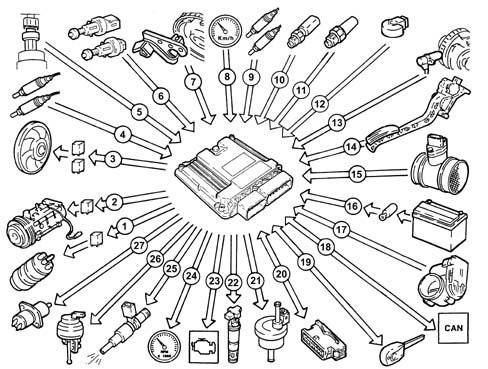
1 - Electric fuel pump
2 - Air conditioner compressor
3 - Electric fan
4 - Lambda sensors upstream of the catalytic converters
5 - Quadrinary
6 - Brake - clutch pedal switch
7 - Timing sensor
8 - Speedometer
9 - Lambda sensors downstream of the catalytic converters
10 - Coolant temperature sensor
11 - Brake servo vacuum sensor
12 - Knock sensor
13 - Rpm sensor
14 - Accelerator pedal with integrated potentiometer
15 - Air flow meter with air temperature sensor
16 - Battery
17 - Throttle body integrated with D.V.L.
18 - CAN line (for communication with ABS/ASR control units and automatic transmission)
19 - Alfa Romeo CODE
20 - Diagnostic socket
21 - Fuel vapour recirculation solenoid
22 - Ignition coils
23 - Engine Check warning light
24 - Rev counter
25 - Injectors
26 - Modular inlet manifold solenoid valve
27 - Variable valve timing
System operating modes
Self-learning
The control unit implements the self-learning mode in the following conditions:
- installation of new injection control unit,
- installation of a new throttle body actuator integratd with D.V.L.
- installation of a new modular intake manifold.
The learnt values of the throttle body integrated with D.V.L. are preserved if the battery is disconnected.
The learnt values of the phonic wheel for recognizing misfire are instead lost.
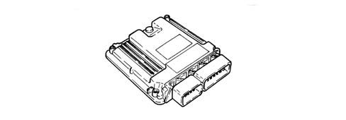
System self-adaptation
The control unit has a self-adaption function which recognizes changes in the engine which occur as a result of bedding-in and ageing processes of both components and the engine itself.
There are two adaptation functions according to two intervention plans: minimum and usage.
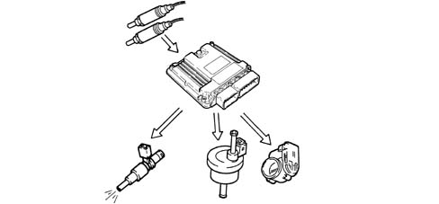
Self-diagnosis
The control unit autodiagnostic system controls the correct operation of the system and signals any faults by means of an (MIL) warning light in the instrument panel which has a standardized European colour and ideogram. This warning light signals both engine management faults and problems detected by the EOBD strategies.
The (MIL) warning light operating logic is as follows:
- with the ignition key in the ON position, the warning light comes on and remains on until the engine has been started up. The control unit's self-test checks the signals coming from the sensors, comparing them with the permitted limits:
Signalling of faults during engine starting:
- the failure of the warning light to go out after the engine has been started up means that there is an error memorized in the control unit.
Fault indication during operation
- the warning light flashing indicates possible damage to the catalytic converter due to misfire.
- the warning light constantly on indicates the presence of engine management errors or EOBD errors.
RECOVERY
From time to time, the control unit defines the type of recovery according to the components which are faulty. The recovery parameters are managed by those components which are not faulty.
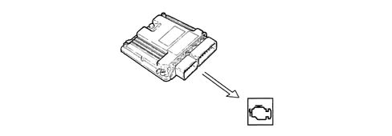
Recognition of the alfa romeo code
When the control unit receives the ignition 'ON' signal, it communicates with the Alfa Romeo CODE control unit to obtain starting enablement.
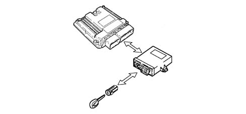
Control of cold starting
In cold starting conditions there is a natural weakening of the mixture which causes poor evaporation of the fuel at low temperatures:
- condensation of the fuel on the inner walls of the inlet manifold;
- increased viscosity of the lubricant oil.
The electronic control unit recognizes this condition and corrects the fuel injection time in accordance with:
- coolant temperature;
- intake air temperature;
- battery voltage;
- engine rpm.
The ignition advance depends solely on the engine rpm and the coolant temperature.
During starting, the control unit controls a first simultaneous injection for all the injectors (full-group injection) and, after recognizing the timing of the cylinders, it starts normal sequential phased operation.
During idling, the injection angle is 45° before T.D.C. (with a stratified charge); at other speeds, the injection angle varies between 310° ανδ 370° βεφορε Τ.D.C. to allow the homogeneity of the mixture.
Whilst the engine is warming up, the control unit operates the throttle body integrated with D.V.L. to regulate the quantity of air required to ensure that the engine does not cut out.
The rpm is made to decrease as the temperature of the engine increases until the optimum value with the engine warmed up is obtained.
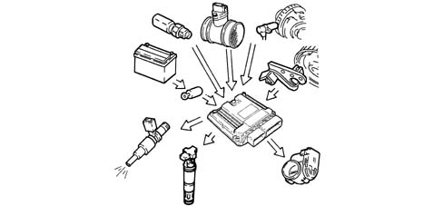
Check on combustion - lambda probe
In EOBD systems the Lambda sensors, which are all the same type, are located upstream and downstream of the catalyzer.
The upstream sensors carry out the check on the mixture strength known as the 1st loop (upstream sensor closed loop). During idling, the information from the upstream Lambda sensors is not used for correcting the mixture strength.
The sensors downstream of the catalyzer are used for the catalyzer diagnosis and for finely modulating the 1st loop control parameters.
With this in mind, the adjustment of the second loop is designed to recover both production differences and those in the response of the upstream sensors which may occur as a result of ageing and pollution.
This control is known as the 2nd loop (downstream sensor closed loop).
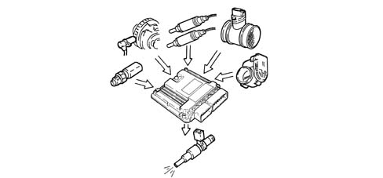
Check on variable valve timing and modular inlet manifold
To optimize the quantity of air drawn in by the engine, the control unit checks:
- inlet timing at two angular positions;
- geometry of inlet ducts over two lengths.
At the maximum torque speed, the control unit sets the open phase:
- cam advanced by 25° engine;
- modular inlet manifold long ducts
At the maximum power speed, the control unit sets the closed phase:
- cam in normal position
- modular inlet manifold short ducts.
During idling, the control unit sets the closed phase:
- cam in normal position
- modular inlet manifold short ducts.
In the other engine operating conditions, the control unit selects the most suitable configuration to optimize performance - consumption - emissions.
During overrunning, the module inlet manifold inlet ducts are always short.
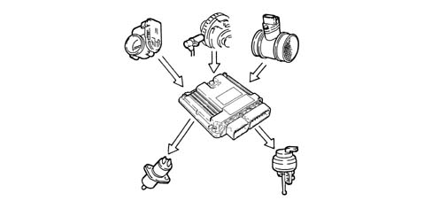
Check on knocking
The control unit can delay the ignition selectively at the cylinder required, according to the combination of figures received from the detonation and timing sensors and:
- reduces the ignition advance in steps of 3° up to a maximum of 9°;
- updates the level to take into account background noise and ageing of the engine
During acceleration, the control unit uses a higher threshold for the increased engine noise.
When the detonation disappears, the control unit increases the ignition advance in steps of 0.75° υντιλ ιτ ισ χομπλετελψ ρεχοϖερεδ.
With the auto-adjustment function, the control unit:
- memorizes the various advance reductions, continuously repeated;
- adapts the map to the different engine conditions.
RECOVERY:
In the case of fault with the timing sensor or the detonation sensor or the injection control unit, the ignition is delayed according to the engine temperature and speed. The maximum ignition delay is always below 9° engine.
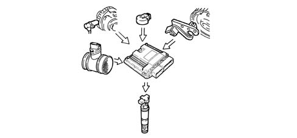
Control of mixture enrichment during acceleration;
When there is a considerable acceleration request, the control unit modifies the injection time and the position of the butterfly.
RECOVERY
The control unit replaces the signal coming from the faulty air flow meter with the signal from the potentiometer integrated in the throttle body integrated with D.V.L.
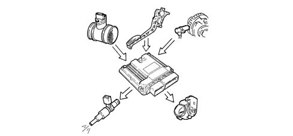
Fuel cut-off with the accelerator pedal released
The control unit, with
- recognition of idle condition;
- engine speed above a certain threshold;
de-activates the fuel injection according to the:
- engine rpm;
- engine temperature;
- vehicle speed.
Before the idle conditions are reached, the dynamics of the engine speed decrease are checked. If they exceed a certain value, the fuel supply is partly reactivated on the basis of a logic which makes provision for the 'gentle accompaniment' of the engine whilst idling.
Having reached the idle condition, the normal functions are restored.
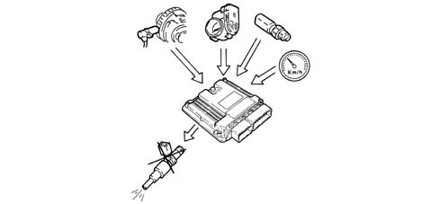
Fuel vapour recovery
The (polluting) fuel vapours, collected in an activated-charcoal filter (canister), are sent to the inlet ducts to be burnt.
This is achieved by a solenoid controlled by the control unit which alternates phases when it is open (canister scrubbing phase) with phases when it is closed (carburation factors learning phase).
During the open phases, the solenoid opening duty cycle is regulated by the control unit so as to eliminate the fuel vapours without altering engine carburation.
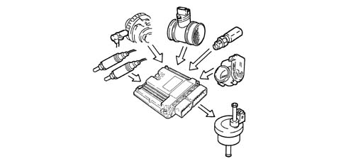
Control of the maximum rpm
Depending on the rpm reached by the engine, the control unit:
- over 6800 rpm cuts off the supply to the injectors (it is allowed to reach a maximum of 7000 rpm for a maximum of 5 s).
- below 6600 rpm it restores the operation of the injectors.
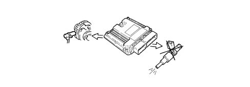
Control of fuel pump
The control unit:
- supplies the fuel pump with the ignition ON (for 5 s) or key set to START and engine speed > 25 rpm;
- cuts off the supply to the fuel pump with ignition OFF or engine speed < 25 rpm.
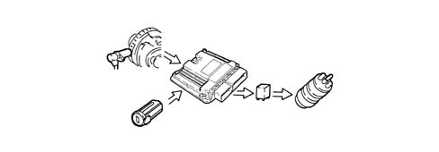
Connection with climate control system
When the climate control is switched on, the compressor absorbs power from the engine.
In idle conditions, the control unit adapts the air flow rate to the new power requirements, with the advantage of maintaining optimum driveability.
The control unit excludes the compressor:
- beyond 6500 rpm;
- beyond a certain engine coolant temperature level (117°C);
- during starting.
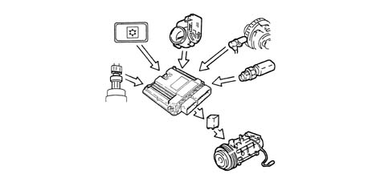
Recognition of cylinder position
During each revolution of the engine, the control unit recognizes which cylinder is in the power stroke and operates the injection and ignition sequence at the appropriate cylinder.
If the timing sensor is faulty, the control unit implements the following strategies:
- – with the engine started up, the engine runs smoothly thanks to the cylinder sequence memory;
- if the engine cuts out and is started up again, the ignition in pairs of coils with the lost spark is activated, the control of the detonation is deactivated and a fixed delay is applied for all cylinders.
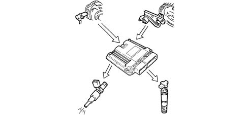
Control of the optimum injection time for each cylinder
According to special maps, the control unit calculates the optimum injection time for each cylinder:
- it modifies the injector opening starting 'point';
- it keeps the closing 'point' in the map, selected on the basis of the engine speed, fixed;
- the fuel injection is sequential and phased for each cylinder (S.E.F.I.).
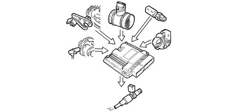
Adjustment of ignition advance values
The control unit processes the signals coming from the sensors and determines:
- the ignition advance for each cylinder;
- the ignition delay at the cylinder required (according to the detonation).
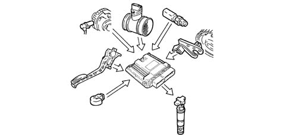
Control of the idle speed
The control unit recognizes the idle condition from the accelerator pedal being in the 'released' position.
The control unit controls the idle speed ignoring the signal from the Lambda sensors, depending on the consumers switched on and the brake/clutch pedal signals and regulates the injection times.
During idling, the injection angle is 45° before T.D.C. (with a stratified charge); at other speeds, the injection angle varies between 310° ανδ 370° βεφορε Τ.D.C. to allow the homogeneity of the mixture.
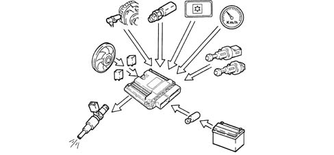
Control of electric cooling fan
The control unit controls the engagement of the fan according to the temperature of the coolant:
- temperature for switching on 1st speed 97°C;
- temperature for switching on 2nd speed 102°C
If the air conditioning system is switched on, the control unit engages the 1st fan speed.
In the absence of the coolant temperature signal, the control unit activates the recovery function and switches on the fan 2nd speed until the error disappears.
Before the fans are activated, the opening of the throttle is increased to prevent a fall in engine revs.
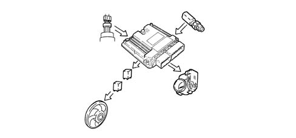
Connection with the abs/asr control unit (where fitted)
The dialogue between the engine control unit and the ABS/ASR control unit takes place via the CAN line available on both control units.
If the wheels slip (indicated by the ABS/ASR control unit) the engine management control unit reduces the engine torque by:
- a reduction in the ignition advances;
- reducing the throttle opening angle.
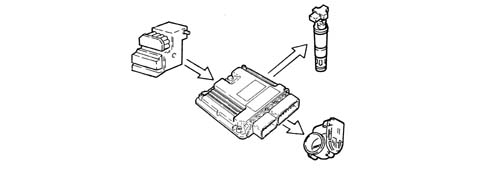
Control of brake servo vacuum
Depending on the signal coming from the vacuum sensor installed on the brake servo, the control unit modifies the position of the motorized butterfly, updates the injection parameters and controls the switching off of the air conditioner compressor (if applicable), in order to maintain optimum vacuum values in the brake servo circuit.
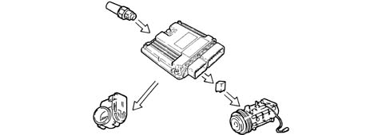
Throttle opening management - city (selespeed version)
The control unit processes the signals coming from the:
- Selespeed transmission control unit;
- accelerator pedal potentiometer;
for the management of the butterfly in the following modes:
- City for good handling and a comfortable drive;
- normal for sporty driving.
The system switches from City to Normal with:
- City key pressed and accelerator pedal fully released
- automatically after selecting a speed manually and releasing the accelerator pedal.
Activation of the function is indicated by special writing in the control panel.
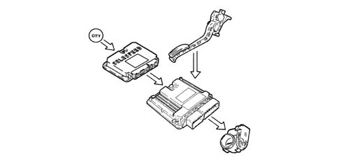
Connection to the selespeed control unit (where fitted)
The dialogue between the engine control unit and the Selespeed control unit takes place via the CAN line available on both control units.
In order to make gear changes, the Selespeed control unit requests torque reductions from the engine management control unit. these reductions are achieved by:
- a reduction in the throttle opening angle;
- a reduction in the ignition advances;
- switching off some or all cylinders.
If the Selespeed control unit is faulty or if there is no communication with the Selespeed control unit, the maximum rpm is limited to around 4000 rpm.
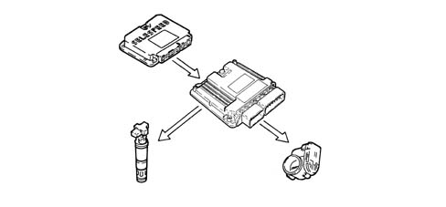
Applies to: engines: 3.2 V6; all production periods
CONSTRUCTION FEATURES
6 cylinder engine in a 60° V formation, 3179 c.c., static advance ignition with a twin overhead camshaft for each cylinder head, hydraulic tappets, 4 valves per cylinder, Bosch Motronic ME7.3.1 integrated injection/ignition system.
View of engine compartment
.
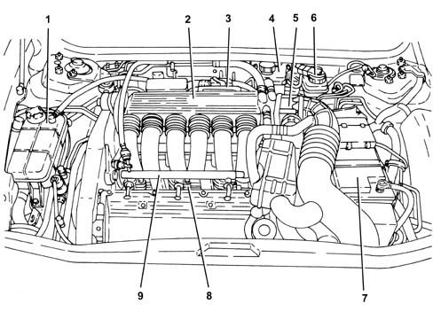
1 - Engine coolant reservoir
2 - Air chamber
3 - Injection - ignition control unit
4 - Power steering fluid reservoir
5 - Throttle body integrated with D.V.L.
6 - Brake - clutch fluid reservoir
7 - Battery
8 - Fuel injectors
9 - Fuel manifold pipe
General characteristics
The unit comprises the engine and all the systems required for its operation:
- fuel system;
- air supply system;
- engine cooling system;
- exhaust system;
- fuel vapour recirculation system
The operation of these systems is optimized by an electronic control system governed by a control unit.
An understanding of the operating logic of the control unit gives an overall picture of the entire GROUP 10 system.
Operation of the injection/ignition system
The Bosch Motronic ME7.3.1 system with a motorized throttle belongs to the category of integrated systems with:
- ignition
- sequential and phased electronic injection.
The control unit controls the air flow rate at the idle rotation speed set by the electronic throttle.
The control unit controls the moment of ignition with the advantage of keeping the engine running smoothly as the ambient parameters and loads applied vary.
The control unit controls and manages fuel injection so that the stoichiometric ratio (air/fuel) is always at the optimum value.
The main operating principles of the system are basically as follows:
- self-learning;
- system self-adaptation;
- autodiagnosis;
- recognition of the Alfa Romeo CODE (Immobilizer);
- controllo dell'avviamento a freddo;
- control of combustion - Lambda sensors;
- control of knock;
- control of the mixture during acceleration
- fuel cut-off with the accelerator pedal released;
- fuel vapour recovery;
- control of the maximum rpm;
- control of the fuel pump;
- connection with the climate control system;
- recognition of cylinder position;
- control of the optimum injection time for each cylinder;
- adjustment of ignition advance values;
- management of the idle speed (also according to the battery voltage);
- control of the electric fans;
- connection with ABS/ASR control unit;
- connection with the automatic transmission control unit (where fitted);
- connection with the instrument panel;
- fuel system diagnosis;
- catalyzer diagnosis;
- detection of misfire;
- Lambda sensors diagnosis.
Fuel injection system
The essential conditions that must always be met in the preparation of the air-fuel mixture for the correct operation of controlled-ignition engines are mainly:
- the 'metering' (air/fuel ratio) should constantly be kept as close as possible to the stoichiometric ratio, so as to ensure the maximum conversion capacity for the catalytic converter (max. efficiency).
- the uniformity of the mixture, consisting of petrol, diffused as finely and evenly as possible in the air.
The information processed by the control unit for controlling optimum metering is received in the form of electrical signals emitted by:
- – air flow meter and air temperature sensor, for the exact quantity of intake air;
- rpm sensor which produces an alternating, single-phase signal whose frequency indicates the engine rpm;
- accelerator pedal with throttle potentiometer, to recognize the driver conditions requested;
- – coolant temperature sensor on the thermostat;
- Lambda probes for determining the oxygen content in the exhaust gases.
Ignition system
The ignition is of the inductive discharge type, distributorless, with power modules located in the fuel injection control unit.
The system has a single coil for each plug (MONOCOIL); the advantages of this solution are:
- less electrical overload;
- guarantee of constant discharge at each spark plug.
Stored in the control unit, there is a map containing the entire set of optimum ignition advance values (for the cylinder at the power stroke) that the engine can adopt in relation to the rpm and required engine load.
The control unit corrects the advance values mainly in accordance with:
- engine coolant temperature;
- intake air temperature;
- detonation.
The information the control unit processes in order to drive the single coils is received in the form of electrical signals emitted by:
- – air flow meter and air temperature sensor, for the exact quantity of intake air;
- rpm sensor which produces an alternating, single-phase signal whose frequency indicates the engine rpm;
- – detonation sensors (on the upper part of the cylinder block/crankcase between the two heads) to recognize the cylinder where detonation is occurring and correct the ignition advance;
- throttle potentiometer, to recognize the minimum, partial and full load conditions;
- timing sensor.
The control unit uses the rpm signal to recognize any misfire which could damage the catalyzers.
OPERATING
Diagram of input/output info to/from control unit
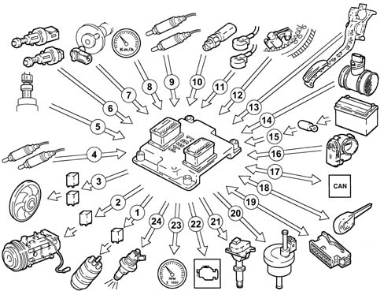
1 - Electric fuel pump
2 - Air conditioner compressor
3 - Electric fan
4 - Lambda sensors upstream of the catalytic preconverters
5 - Quadrinary
6 - Brake - clutch pedal switch
7 - Timing sensor
8 - Speedometer
9 - Lambda sensors downstream of the catalytic converters
10 - Coolant temperature sensor
11 - Detonation sensors
12 - Rpm sensor
13 - Accelerator pedal with integrated potentiometer
14 - Air flow meter with air temperature sensor
15 - Battery
16 - Throttle body integral with D.V.L.;
17 - CAN line ( for communication with ABS/ASR control units and automatic transmission)
18 - Alfa Romeo CODE
19 - Diagnostic socket
20 - Fuel vapour recirculation solenoid
21 - Ignition coils
22 - Engine Check warning light
23 - Rev counter
24 - Fuel injectors
System operating modes
Self-learning
The control unit implements the self-learning mode in the following conditions:
- installation of new injection control unit,
- installation of a new throttle body actuator integratd with D.V.L.
- removing/refitting or replacement of rpm sensor/phonic wheel, for recognizing misfire.
The learnt values of the throttle body integrated with D.V.L. are preserved if the battery is disconnected.
The learnt values of the phonic wheel for recognizing misfire are instead lost.
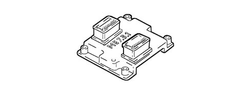
System self-adaptation
The control unit has a self-adaption function which recognizes changes in the engine which occur as a result of bedding-in and ageing processes of both components and the engine itself.
There are two adaptation functions according to two intervention plans: minimum and usage.
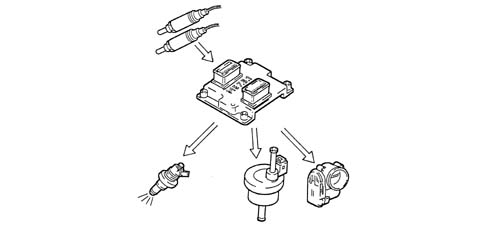
Self-diagnosis
The control unit autodiagnostic system controls the correct operation of the system and signals any faults by means of an (MIL) warning light in the instrument panel which has a standardized European colour and ideogram. This warning light signals both engine management faults and problems detected by the EOBD strategies.
The (MIL) warning light operating logic is as follows:
- with the ignition key in the ON position, the warning light comes on and remains on until the engine has been started up. The control unit's self-test checks the signals coming from the sensors, comparing them with the permitted limits:
Indication of faults at start-up:
- the failure of the warning light to go out after the engine has been started up means that there is an error memorized in the control unit.
Fault indication during operation
- the warning light flashing indicates possible damage to the catalytic converter due to misfire.
- the warning light constantly on indicates the presence of engine management errors or EOBD errors.
RECOVERY
From time to time, the control unit defines the type of recovery according to the components which are faulty. The recovery parameters are managed by those components which are not faulty.
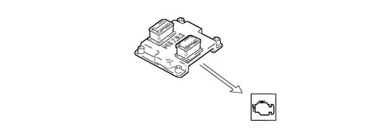
Recognition of the alfa romeo code
When the control unit receives the ignition 'ON' signal, it dialogues with the Alfa Romeo CODE control unit to obtain starting enablement.
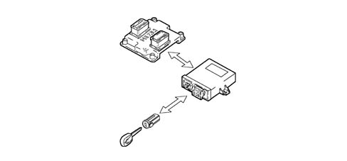
Check on cold starting
In cold starting conditions there is a natural weakening of the mixture which causes poor evaporation of the fuel at low temperatures:
- condensation of the fuel on the inner walls of the inlet manifold;
- higher viscosity of the lubricating oil.
The electronic control unit recognizes this condition and corrects the fuel injection time in accordance with:
- coolant temperature;
- intake air temperature;
- battery voltage;
- engine rpm.
The ignition advance depends solely on the engine rpm and the coolant temperature.
During starting, the control unit controls a first simultaneous injection for all the injectors (full-group injection) and, after recognizing the timing of the cylinders, it starts normal sequential phased operation.
Whilst the engine is warming up, the control unit operates the butterfly casing integrated with D.V.L. to regulate the quantity of air required to ensure that the engine does not cut out.
The rotation speed decreases as the engine temperature increases until the normal value is reached with the engine at operating temperature.
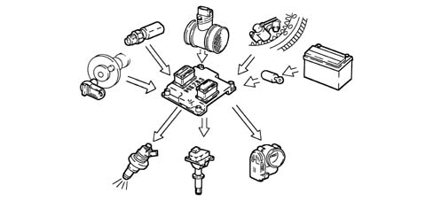
Check on combustion - lambda probe
In EOBD systems the Lambda sensors, which are all the same type, are located upstream of the catalyzer and downstream of the catalyzer.
The upstream sensors carry out the check on the mixture strength known as the 1st loop (upstream sensor closed loop). The sensors downstream of the catalyzer are used for the catalyzer diagnosis and for finely modulating the 1st loop control parameters.
With this in mind, the adjustment of the second loop is designed to recover both production differences and those in the response of the upstream sensors which may occur as a result of ageing and pollution.
This control is known as the 2nd loop (downstream sensor closed loop).
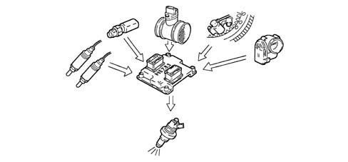
Check on knocking
The control unit can delay the ignition selectively at the cylinder required, according to the combination of figures received from the detonation and timing sensors and:
- reduces the ignition advance in steps of 3° up to a maximum of 9°
- updates the level to take into account background noise and ageing of the engine
During acceleration, the control unit uses a higher threshold for the increased engine noise.
When the detonation disappears, the control unit increases the ignition advance in steps of 0.75° υντιλ ιτ ισ φυλλψ ρεστορεδ.
With the auto-adjustment function, the control unit:
- memorizes the various advance reductions, continuously repeated;
- adapts the map to the different engine conditions.
RECOVERY
In the case of fault with the timing sensor or the detonation sensor or the injection control unit, the ignition is delayed according to the engine temperature and speed. The maximum ignition delay is always below 9° engine.
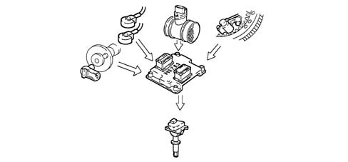
Control of the mixture enrichment during acceleration
When there is a considerable acceleration request, the control unit modifies the injection time and the position of the butterfly.
RECOVERY
The control unit replaces the signal coming from the faulty air flow meter with a signal from the potentiometer built into the throttle body actuator.
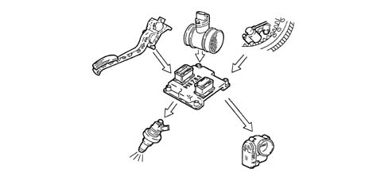
Fuel cut-off with the accelerator pedal released
The control unit, with
- recognition of idle condition;
- engine speed above a certain threshold;
de-activates the fuel injection according to the:
- engine rpm;
- engine temperature;
- vehicle speed.
Before the idle conditions are reached, the dynamics of the engine speed decrease are checked. If the drop exceeds a certain value, the fuel supply is partly restored by a system which slowly restores the engine to idle speed.
Having reached the idle condition, the normal functions are restored.
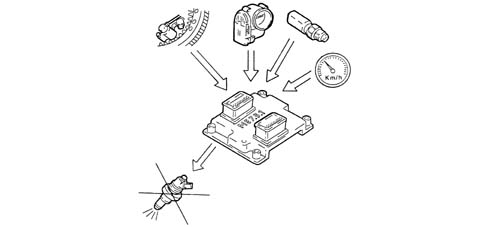
Fuel vapour recovery
The (polluting) fuel vapours, collected in an activated-charcoal filter (canister), are sent to the inlet ducts to be burnt.
This is achieved by a solenoid controlled by the control unit which alternates phases when it is open (canister scrubbing phase) with phases when it is closed (carburation factors learning phase).
During the open phases, the solenoid opening duty cycle is regulated by the control unit so as to eliminate the fuel vapours without altering engine carburation.
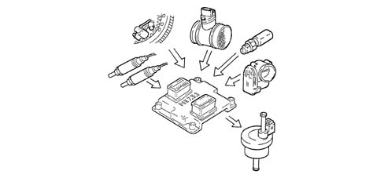
Control of the maximum rpm
Depending on the rpm reached by the engine, the control unit:
- over 6800 rpm cuts off the supply to the injectors (it is allowed to reach a maximum of 7000 rpm for a maximum of 5 s).
- below 6600 rpm it restores the operation of the injectors.
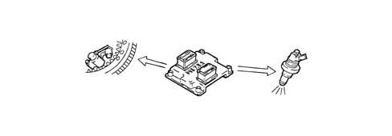
Control of fuel pump
The control unit:
- supplies the fuel pump with the ignition ON (for 5 s) or key set to START and engine speed > 25 rpm;
- cuts off the supply to the fuel pump with ignition OFF or engine speed < 25 rpm.
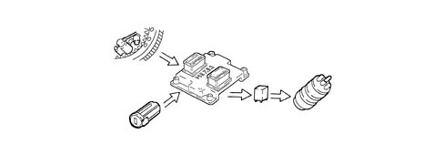
Connection to the climate control system
When the climate control is switched on, the compressor absorbs power from the engine.
In idle conditions, the control unit adapts the air flow rate to the new power requirements, with the advantage of maintaining optimum driveability.
The control unit excludes the compressor:
- beyond 6500 rpm;
- beyond a certain engine coolant temperature level (117°C);
- during starting.
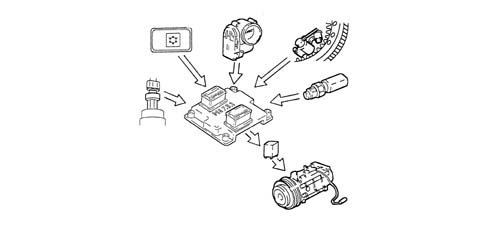
Recognition of cylinder position
During each revolution of the engine, the control unit recognizes which cylinder is in the power stroke and operates the injection and ignition sequence at the appropriate cylinder.
If the timing sensor is faulty, the control unit does not recognize whether cylinder no. 1 or cylinder no. 5 is in the explosion stroke and implements the following strategies:
- – with the engine started up, the engine runs smoothly thanks to the cylinder sequence memory;
- if the engine cuts out and is started up again, the ignition in pairs of coils with the lost spark is activated, the control of the detonation is deactivated and a fixed delay is applied for all cylinders.
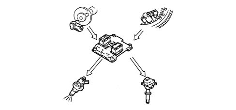
Control of the optimum injection time for each cylinder
According to special maps, the control unit calculates the optimum injection time for each cylinder:
- it modifies the injector opening starting 'point';
- it keeps the closing 'point' in the map, selected on the basis of the engine speed, fixed;
- the fuel injection is sequential and timed for each cylinder (S.E.F.I.).
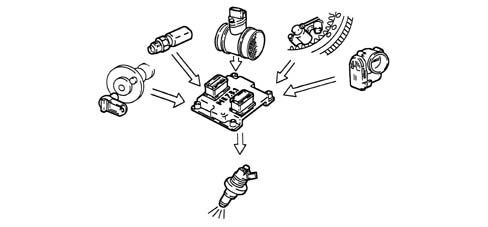
Adjustment of ignition advance values
The control unit processes the signals coming from the sensors and determines:
- the ignition advance for each cylinder
- the ignition delay at the cylinder required (according to the detonation).
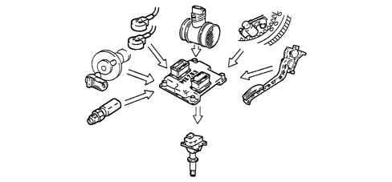
Control of the idle speed
The control unit recognizes the idle condition from the accelerator pedal being in the 'released' position.
To control the idle speed according to the consumers switched on and brake/clutch pedal signals, the control unit operates the position of the motorized butterfly.
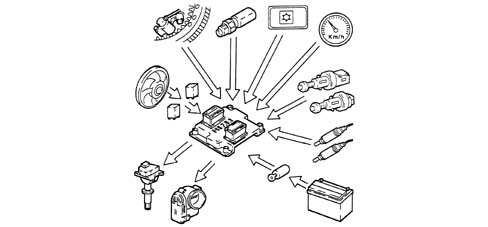
Control of the electric fans
The control unit controls fan activation according to the temperature of the coolant:
- temperature for switching on 1st speed 97°C;
- temperature for switching on 2nd speed 102°C
If the air conditioning system is switched on, the control unit engages the 1
st
fan speed.
In the absence of the coolant temperature signal, the control unit activates the recovery function and switches on the fan 2
nd
speed until the error disappears.
When the fans are activated, the opening of the throttle is increased to prevent a fall in engine revs.
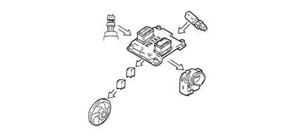
Connection with the abs/asr control unit (where fitted)
The dialogue between the engine control unit and the ABS/ASR control unit takes place via the CAN line available on both control units.
If the wheels slip (indicated by the ABS/ASR control unit) the engine management control unit reduces the engine torque by:
- a reduction in the ignition advances;
- reducing the throttle opening angle.
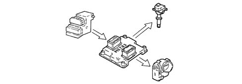
Connection to the selespeed control unit (where fitted)
The dialogue between the engine control unit and the Selespeed control unit takes place via the CAN line available on both control units.
In order to make gear changes, the Selespeed control unit requests torque reductions from the engine management control unit. These reductions are achieved by:
- reducing the throttle opening angle.
- a reduction in the ignition advances;
- switching off some or all cylinders.
If the Selespeed control unit is faulty or if there is no communication with the Selespeed control unit, the maximum rpm is limited to around 4000 rpm.
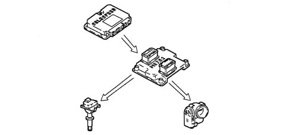
Applies to: engines: 1.9 JTD 16V; all production periods
SPECIFICATIONS
TYPE
Current developments
These engines are fitte with ''Bosch Common Rail EDC-16C8 high pressure electronic injection systems for fast diesel engines totally managed by an electronic control unit.
SPECIFIC FEATURES OF THE SYSTEM
Devices adopted
These engines are fitted with the following emissions control devices:
- exhaust system with oxidising catalytic converter;
- E.G.R. exhaust gas recirculation system with heat exchanger;
- crankcase vapour/gas recirculation system.
COMPOSITION
STRUCTURE
The unit comprises the engine and all the systems required for its operation:
- fuel system;
- air turbocharging system;
- engine cooling system;
- exhaust system with catalytic converter;
- oil vapour recirculation system;
- E.G.R. exhaust gas recirculation system with heat exchanger;
- anti-shake switch-off system.
The operation of these systems is optimized by an electronic control system governed by a control unit.
An understanding of the operating logic of the control unit gives an overall picture of the entire GROUP 10 system
Characteristic of working principle 1060 DIESEL INJECTION SYSTEM
.
CONSTRUCTION
Direct injection turbodiesel engine without precombustion chamber, 4 cylinders in line, 1910 c.c., twin-mass flywheel with twin ramp, four valves per cylinder with hydraulic tappets, two overhead camshafts with geared power transmission, supercharged with variable geometry turbocharger and intercooler, Bosch Common Rail EDC-16C8 electronic fuel injection system.